Buttercups see:
| creeping buttercup | Ranunculus repens | 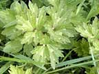 | 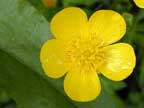 |
| celery leaved buttercup | Ranunculus sceleratus | 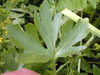 | 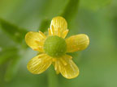 |
| celandine | Ranunculus ficaria | 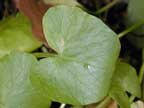 | 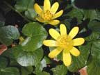 |
| giant buttercup | Ranunculus acris | 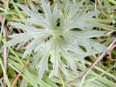 | 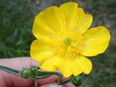 |
| marsh marigold | Caltha palustris | 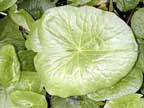 | 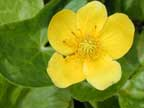 |
| small flowered buttercup | Ranunculus parviflorus | 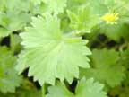 | 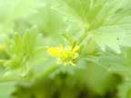 |